重要文化財「野木町煉瓦窯」の敷地内で、
窯焼きピッツァと野木のおやさいをお出ししています。
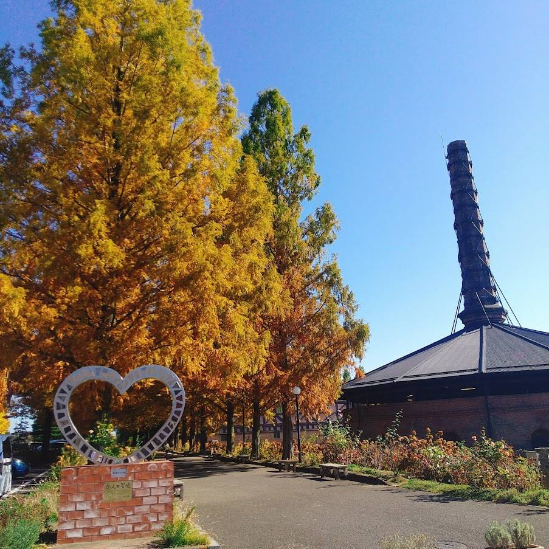
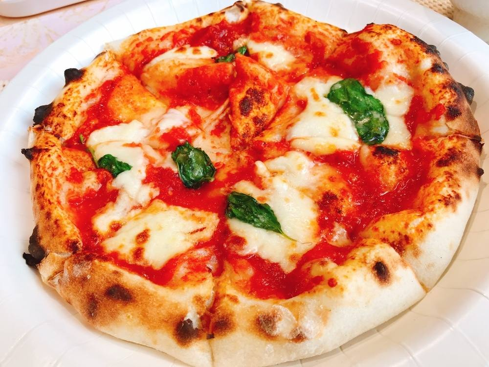
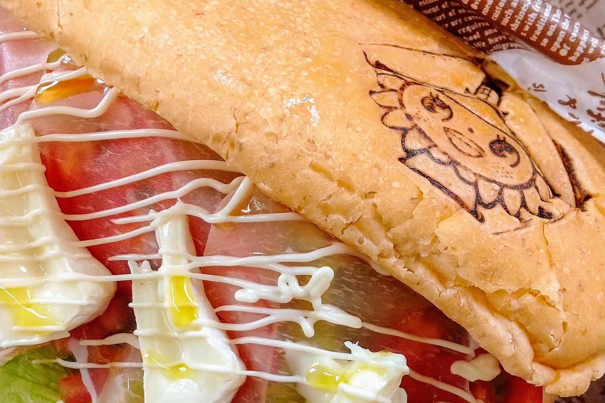
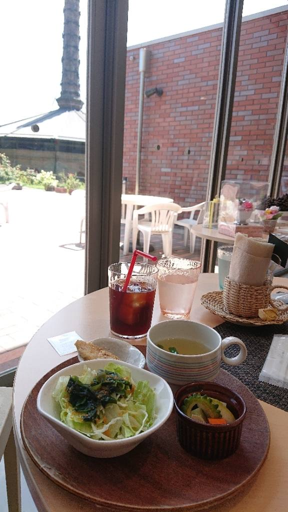
お席のご予約も、お持ち帰りやファミリーパックのご注文も、お電話で承ります。
PIZZA
生地は、栃木県産の小麦「ゆめかおり」と天然酵母で仕込んでおります。ご注文をいただいてから一枚ずつ手で伸ばし、窯で焼き上げます。もちもちとした食感を、焼きたてのうちにお召し上がりくださいませ。
上にのせるおやさいは、野木町でとれた旬のものです。週替りですので、その週の内容はお気軽にお尋ねください。デザートのピッツァ「ひまわりピッツァ」も、一年を通してご用意しております。
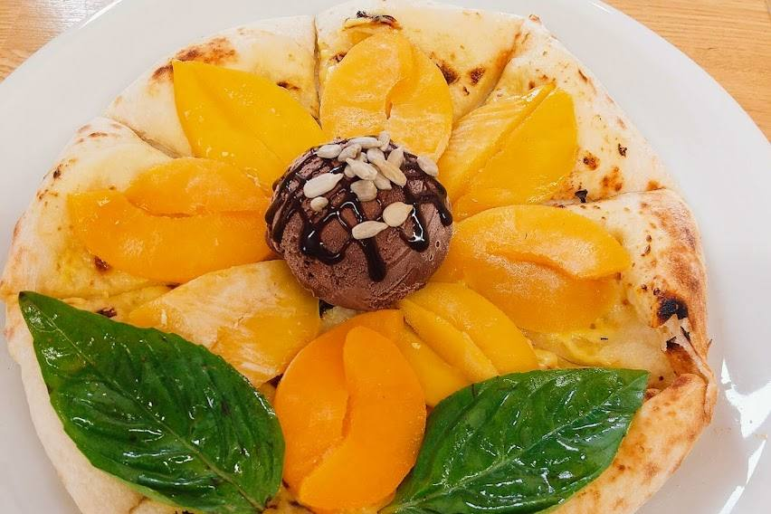
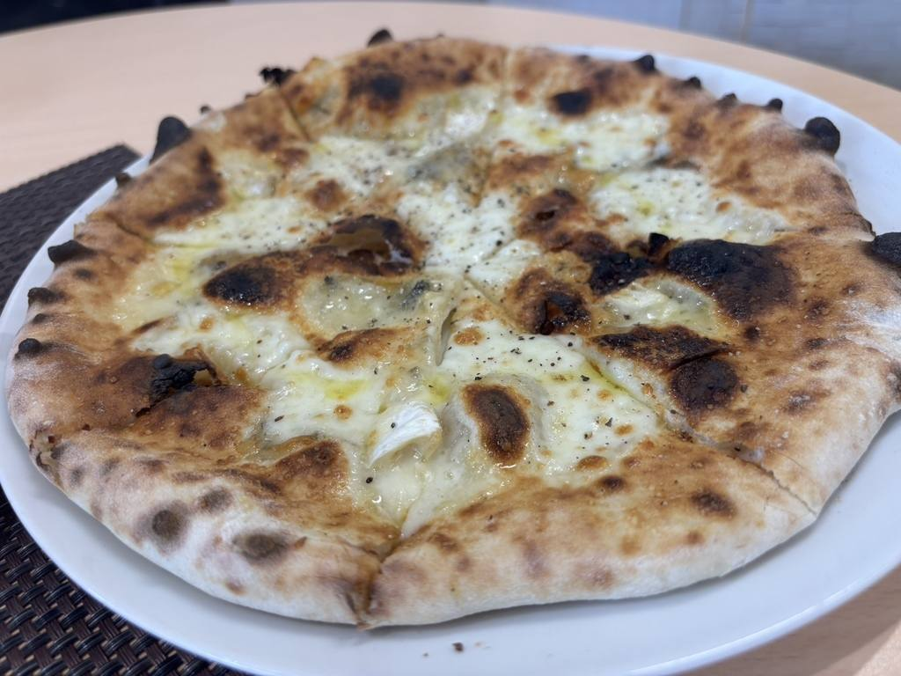
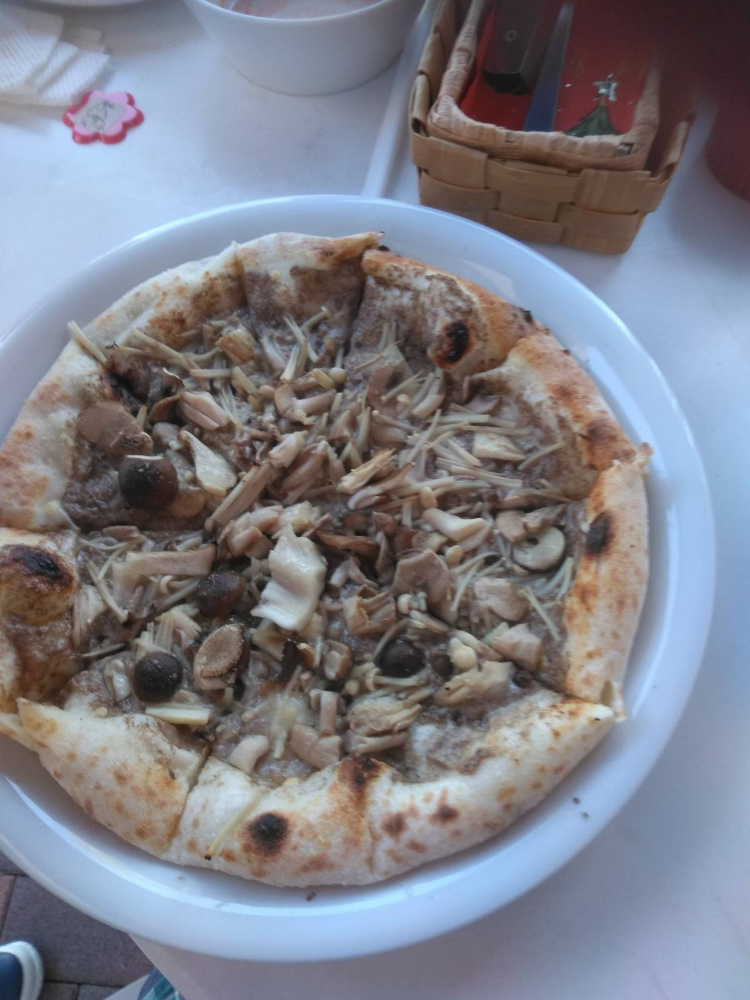
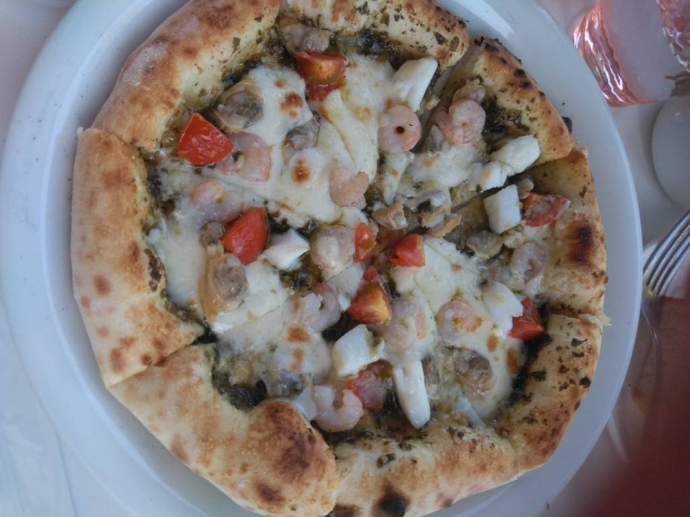
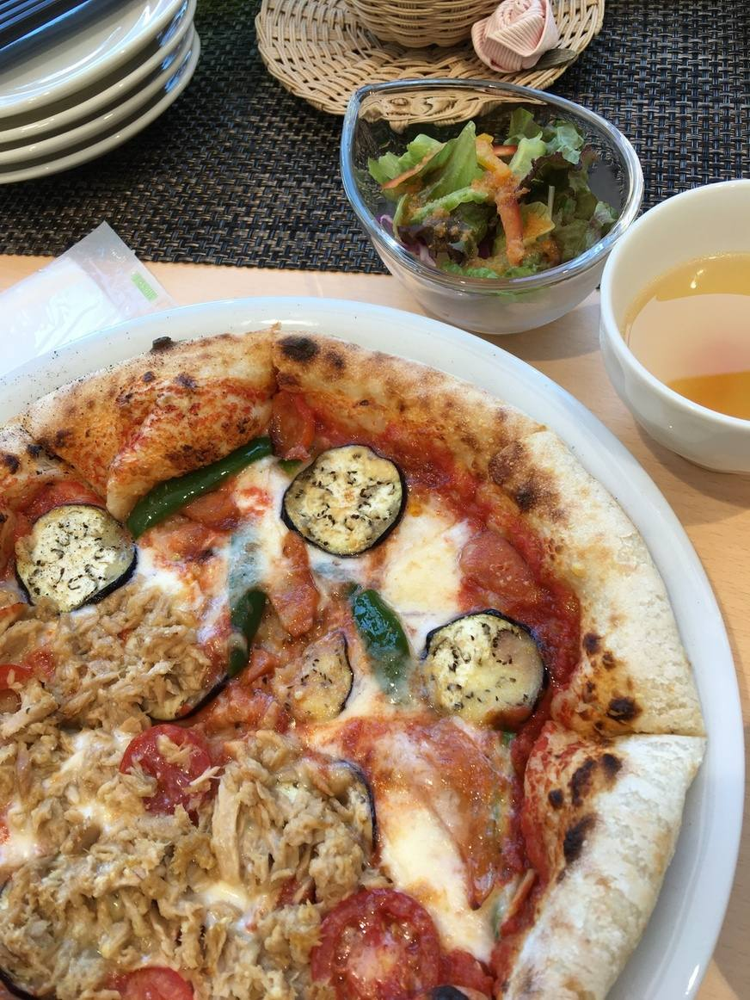
HOFMANN KILN
当店は、国の重要文化財「野木町煉瓦窯」の敷地内、野木ホフマン館の中にございます。窓の外にはメタセコイアの並木と芝生が広がり、秋には並木が色づきます。お食事のあとは、そのままお散歩にお出かけくださいませ。
テラス席はペットとご一緒にお使いいただけます。ベビーチェアも三台ご用意しておりますので、小さなお子様連れでも遠慮なくお越しください。店内は全席禁煙でございます。
珈琲を一杯、ソフトクリームをひとつ、でも構いません。お品書きに載せていないお飲みものやデザートのお値段は、店内のお品書きに掲げておりますので、どうぞご覧くださいませ。
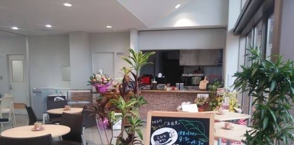
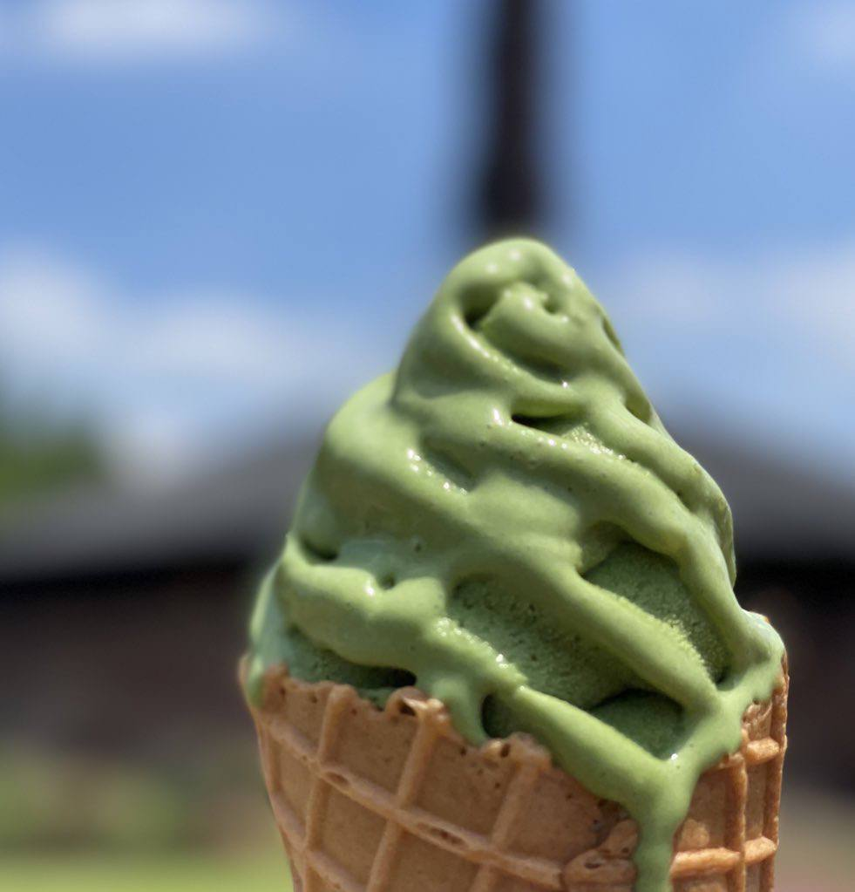
NOGI BRAND
野木ブランド認定商品／ご当地グルメ「のぎめし」
栃木県産の小麦「ゆめかおり」を使い、トマトで色をつけて煉瓦のかたちに焼いた天然酵母パンでございます。表には野木町のマスコット「のぎのん」の焼印を入れております。
はさんでいるのは、野木町産のおやさいとトマト、生ハムとカマンベールチーズ。お召し上がりの場でも、お持ち帰りでも承ります。
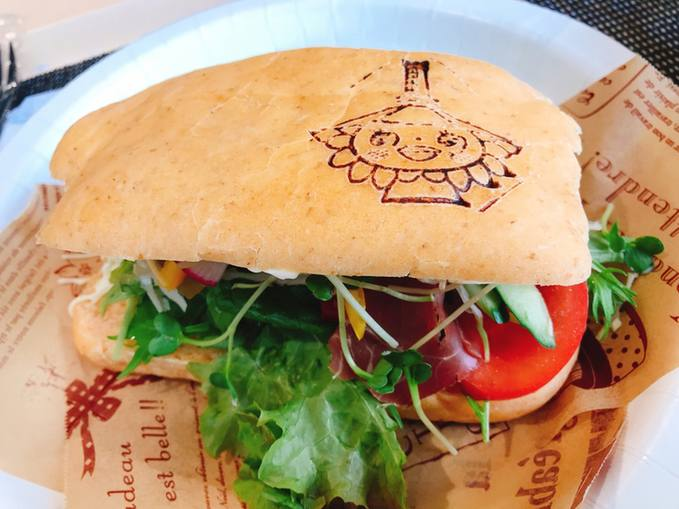
BREAD & MORNING
天然酵母と国産小麦で焼いた手づくりのぱんを、毎日店頭で販売しております（菓子ぱんは土曜・日曜・祝日のみ）。煉瓦サンドのパンも、モーニングのトーストも、このぱんでございます。
朝は、平日は十時から、土曜・日曜・祝日は九時三十分から開けております。十一時までのご注文でモーニングを承ります。軽めにお済ませになりたい方には、トーストとお飲みもののコンビセットもございます。
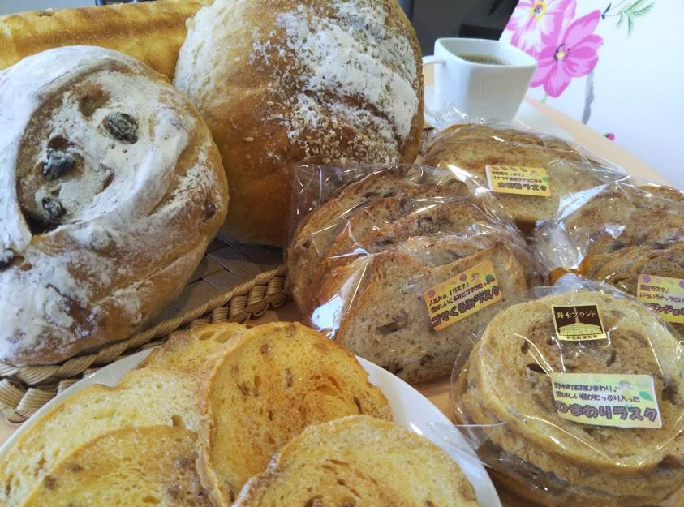
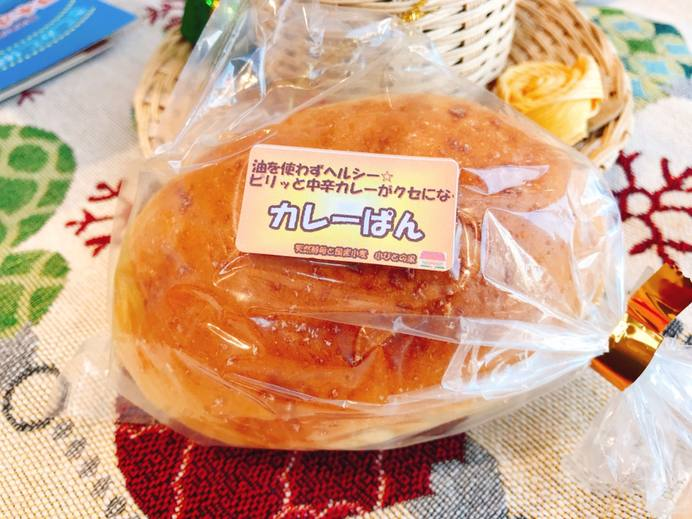
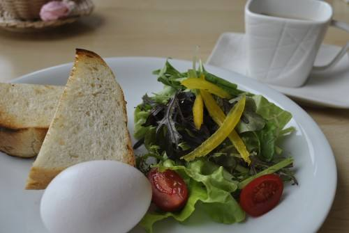
ACCESS
| 店名 | こびとカフェ＠陽だまりレンガ広場 |
|---|---|
| 住所 | 〒329-0114 栃木県下都賀郡野木町野木3324-10 野木ホフマン館 内 |
| 電話 | 0280-54-4555 |
| 営業時間 | 平日 10:00〜18:00 土日祝 9:30〜18:00 （ラストオーダー 17:30） |
| モーニング | 開店〜11:00 |
| ランチ | 11:00〜（ラストオーダー 17:30） |
| 定休日 | 月曜日（祝日の場合は営業し、翌平日が振替休日） 毎月第一火曜日 年末年始 12/29〜1/3 夏季特別休業（6月最終週の月〜金） |
| お席 | テーブル席・テラス席（ペットもご一緒に） ベビーチェア 3台／全席禁煙 |
| 駐車場 | 野木ホフマン館の駐車場をお使いいただけます |
| お支払い | 現金／クレジットカード（JCB・VISA・Master・AMEX） スマホ決済（PayPay・LINE Pay・d払い・au PAY）／交通系IC |
| ご予約 | お席のご予約はお電話で承ります。テラス席をご希望のときも、お電話でお申し付けください 団体様のお食事、お持ち帰りのファミリーパックは、あらかじめご連絡いただけますと確実でございます |
| 道順 | JR宇都宮線「古河」駅より車で5分 JR宇都宮線「野木」駅より車で10分 乗馬クラブ「クレイン栃木」さんのおとなりです |
道順は Googleマップで開く と、いまの場所からご案内できます。